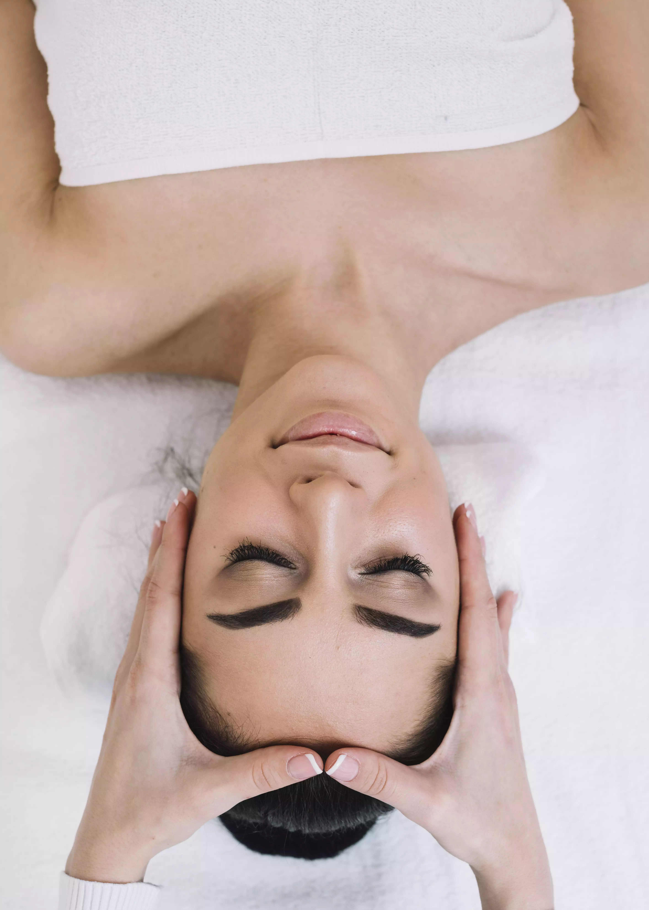
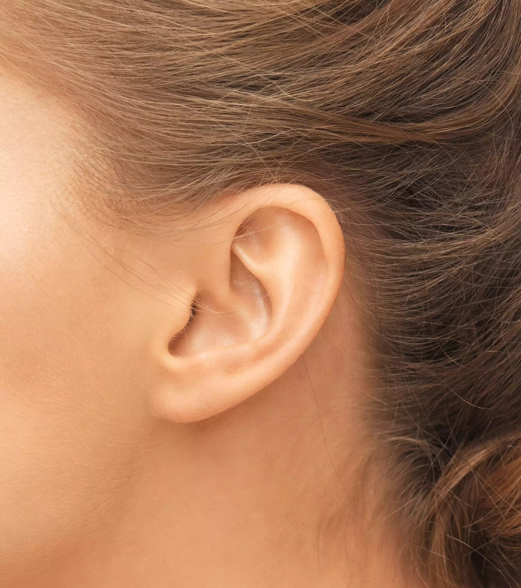

Réflexologie Plantaire
La plus connue des réflexologies. Elle agit sur les zones réflexes des pieds pour apaiser les tensions et rééquilibrer l'organisme.

Bonjour, je suis Linda.
Praticienne passionnée de réflexologie, j'ai choisi de consacrer mes mains au bien-être global de chacun. Grâce à cette approche, j'aide à relâcher le stress, favoriser la détente et rétablir l'équilibre naturel entre le corps et l'esprit.
Ma découverte de la réflexologie lors d'une précédente formation fut une révélation : bien plus qu'un simple massage des pieds, c'est un véritable art d'équilibrer le corps et l'esprit. Depuis, j'ai approfondi mes compétences pour offrir des soins personnalisés et adaptés à chaque personne.
Aujourd'hui, je suis fière d'accompagner mes clients, en ambassadrice passionnée de toutes les formes de réflexologie, souvent méconnues mais pourtant si efficaces.
Réflexologie Plantaire
La plus connue des réflexologies. Elle agit sur les zones réflexes des pieds pour apaiser les tensions et rééquilibrer l'organisme.
Réflexologie Palmaire
Offre une alternative idéale lorsque les pieds ne sont pas accessibles. Simple et apaisante, elle agit aussi sur l'équilibre global du corps.

Réflexologie Crânio-Faciale
Utilise les points réflexes du visage. Combinée à la réflexologie crânienne, elle favorise la détente profonde et aide à calmer le stress.

Réflexologie Auriculaire
En complément des autres types de réflexologies, particulièrement efficace pour accompagner le stress et certains déséquilibres.
Réflexologie Plantaire
60 min
60€
Réflexologie Palmaire
60 min
60€
Réflexologie Crânio-Faciale
60 min
60€
Réflexologie Bébé
60 min
25€
Réflexologies Combinées
75 min
75€
C'est une technique manuelle qui stimule des zones précises sur les pieds, mains, le visage ou les oreilles pour favoriser la détente et rétablir l'équilibre du corps.
Non, elle vient en complément d'un traitement déjà en place mais ne s'y substitue pas.
À tous, quels que soient l'âge ou la condition physique, excepté pour les femmes enceintes de moins de trois mois. Les séances sont adaptées selon chaque profil.
Un échange préalable pour cerner vos besoins, puis une séance d'environ 45 minutes où je travaille les zones réflexes pour vous détendre.
Non, la pression est toujours adaptée à votre confort. Certaines zones peuvent être sensibles.
Cela dépend de vos besoins. Nous en discuterons ensemble lors du premier échange.
Je me déplace à domicile ou en entreprise, avec tout le matériel nécessaire pour un confort optimal.
Rien de spécial, juste porter une tenue confortable et avoir les pieds propres.
Pensez à vous hydrater pour favoriser l'élimination des toxines libérées pendant le soin.